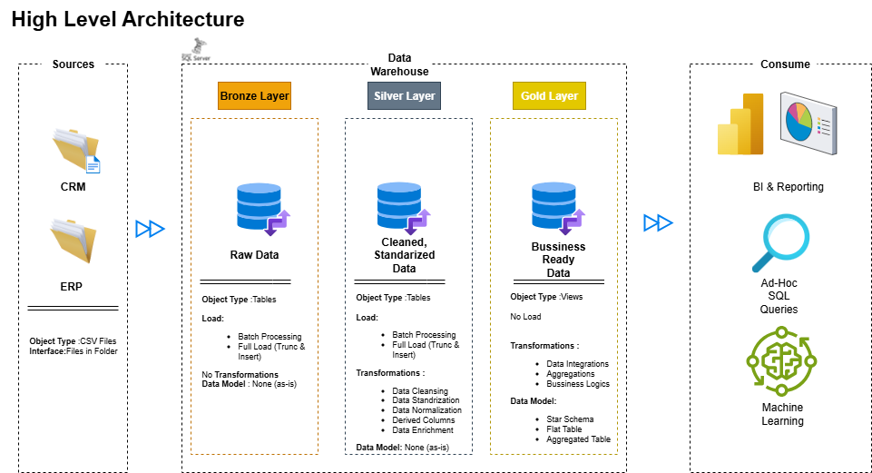

My Portfolio
Power BI Projects
Description: Sales dashboard for retail company, showing trends and KPIs for decision making.
Tools: Power BI, Excel, DAX
Description: Project designed to provide a comprehensive view of sales performance within the information technology sector. The report is divided into three main sections: Headlines, Regions, and Decomposition, each offering distinct analytical perspectives.
Tools: Power BI, DAX
Data Projects
Data Warehouse

Description: Building a modern data warehouse with SQL Server, including ETL processes, data modeling, and analytics. Welcome to the Data Warehouse and Analytics Project repository!🚀 This project demonstrates a comprehensive data warehousing and analytics solution, from building a data warehouse to generating actionable insights. Designed as a portfolio project highlights industry best practices in data engineering and analytics.
Tools: SQL, Drawio, Notion, GitHub
💻 View Repository
Auto MPG Prediction


Description: This project uses Scikit-learn to predict vehicle fuel consumption (mpg).
Tools: Python, Pandas, Seaborn, Matplotlib, Sticky-learn
💻 View Repository